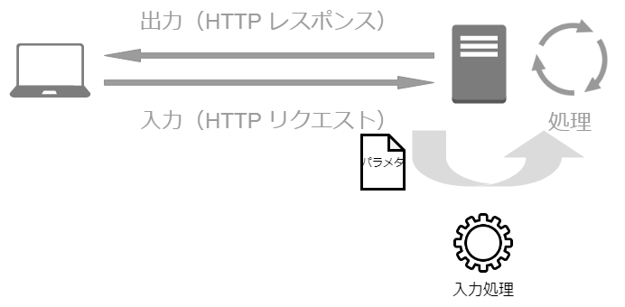
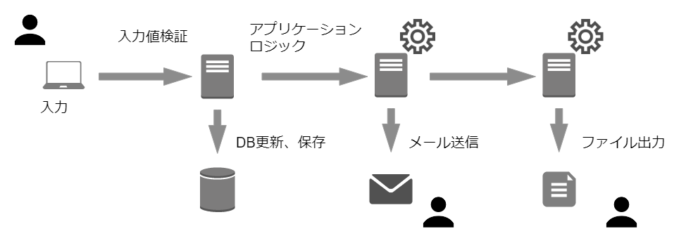

~入力処理とセキュリティ~
Webアプリケーションの入力値
（＝ HTTP リクエストパラメータ）

文字コード対応表(ASCII)
| 文字 | 文字コード(2進数) | 16進数 |
|---|---|---|
| A | 01000001 | 41 |
| ! | 00100001 | 21 |
文字コード比較表
| 文字 | ASCII | SHIFT-JIS | Unicode |
|---|---|---|---|
| A | 41 | 41 | U+0041 |
| あ | - | 82a0 | U+3042 |
mb_check_encoding (string $var, string $encoding) : bool
$name = isset($_GET['name']) ? $_GET['name'] : '';
// 文字エンコーディング（SHIFT-JIS）のチェック
if(! mb_check_encoding($name, 'Shift_JIS')) {
die('文字エンコーディングが不正です');
}
$name = mb_convert_encoding($name, 'UTF-8', 'Shift_JIS');

バイナリセーフとヌルバイト攻撃
| 文字 | 1 | %00 | < | s | c | r |
|---|---|---|---|---|---|---|
| 文字の値 | 31 | 00 | 3c | 73 | 63 | 72 |
<body>
<?php
$p = $_GET['p'];
if (ereg('^[0-9]+$', $p) === FALSE ) {
die('整数値を入力してください');
}
echo $p;
?>
</body>
正規表現による入力値検証
| 関数 | 特徴 |
|---|---|
| ereg 系 | 利用しない（PHP7.0以降削除） |
| preg 系 | UTF-8 の場合のみ日本語を扱える |
| mb_ereg 系 | 様々な文字エンコーディングが利用できる |
// preg_match 関数を利用する場合
$p = filter_input(INPUT_GET, 'p');
if (preg_match('/\A[a-z0-9]{1,5}\z/ui', $p) !== 1) {
die('1文字以上5文字以下の英数字を入力してください');
}
// mb_ereg 関数を利用する場合
$p = filter_input(INPUT_GET, 'p');
if (mb_ereg('\A[a-z0-9]{1,5}\z', $p) === false) {
die('1文字以上5文字以下の英数字を入力してください');
}
// 制御文字を禁止
$addr = filter_input(INPUT_GET, 'addr');
if (preg_match('/\A[[:^cntrl:]]{1,30}\z/u', $addr) !== 1) {
die('30文字以内で住所を入力してください（必須項目）。（省略）')
}
// 改行・タブ以外の制御文字を禁止
$addr = filter_input(INPUT_GET, 'addr');
if (preg_match('/\A[\r\n\t[:^cntrl:]]{1,30}\z/u', $addr) !== 1) {
die('30文字以内で住所を入力してください（必須項目）。（省略）')
}
入力値検証とフレームワーク
public function rules()
{
return [
// 必須、post テーブル内で一意、最大255文字
'title' => 'required|unique:posts|max:255',
// 必須
'body' => 'required',
];
}
サンプルアプリケーション
{kind=link}